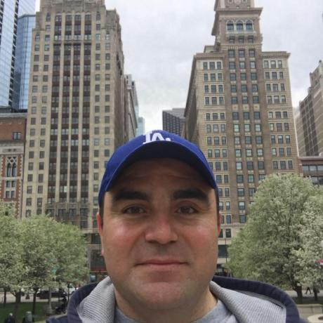

About me

My name is Vartan Krekorian, I live in Los Angeles and I love computers and technology. I work for a freight
forwarding company as network engineer and I have been in the field of IT for 10 years.
I have engineering background, I have a degree in electronics and communications engineering, I got into IT when I worked for a telecommunication equipment manufacturing company as a data communication engineer and I have been doing that ever since.
I have engineering background, I have a degree in electronics and communications engineering, I got into IT when I worked for a telecommunication equipment manufacturing company as a data communication engineer and I have been doing that ever since.
On my free time I like to play with tech gadgets, I love reading, hiking and watching sports. I am a huge fan
of
Manchester United and one of my to do list is to visit their home ground Old Trafford in England.
My goal from this class to be able to create full stack websites, even though I am more interested in backend development. my future plan is to Python and SQL in depth, I have taken classes for both but I want to be more advanced.
My goal from this class to be able to create full stack websites, even though I am more interested in backend development. my future plan is to Python and SQL in depth, I have taken classes for both but I want to be more advanced.